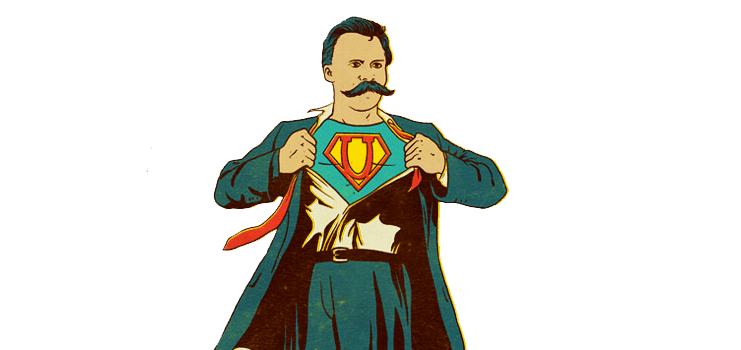

Modern Bir Rol Model: “Kara Şövalye”
Gerçekleştirdiğiniz eylemlerin sonuçlarını ve nedenlerini düzenli olarak düşünen bir bireyseniz, doğru veya yanlış attığınız her küçük adımın ahlaki ağırlığı ile yüzleştiğinizde o zaman bazı şeylerin ahlaki olup olmadığını bilmediğiniz durumlarla karşılaşırsınız. Eylemlerinizin ayrıntılarını ve sonuçlarını bulmaya çalışırsınız, daha sonrada bu eylemin peşinden gidilir mi yada çoğunluğun iyiliği için vazgeçilir mi karar verirsiniz. Genel prensiplere göre bir eylemin ahlaklı olduğunu anlamak için onun toplum ölçeğindeki etkisine bakılmalıdır. Bu konuda sert bir kural olmamasına rağmen, çoğu durumda bir sezgisel ölçü olarak kabul edilebilir.Ve iyiyle kötüyü çok özenle düşünemeyen insanlar adına bir insanın toplumun sınırları çerçevesinde nasıl davranması gerektiğine dair bir takım ahlaki kurallarımız vardır. Hepimiz bu kurallara uymaya ve uymayanları cezalandırmaya karar veriyoruz. Bu kurallar tekrarlandıkça ülkelerin yasaları oluşuyor. Peki insan toplulukları kurduğundan beri, genç kuşaklara aktardığımız bu yasalardan ne kadar eminiz. Zamanla ahlaki kuralların nedenini unuturuz ve sadece yapar hale geliriz. Neredeyse dinler gibi. Çoğu dinin belirli bir zaman ve coğrafya için ahlaki bir kural oluşturma çabasında olduğu söylenebilir.
“Mantıklı bir insan kendini dünyaya uydurur. mantıksız bir insan ise, dünyayı kendine uydurma konusunda ısrar eder. dolayısıyla, tüm gelişmeler mantıksız insanlardan çıkar.”
George Bernard
ShawToplumun varlığını devam ettirmesi söz konusu olduğunda bu kurallar pragmatik bir şekilde işler. Yüksek bir şeyleri arzulamadığımız sürece kurallar birbirimize uyumlu ve hoşgörülü bir şekilde yaşadığımızdan emin olur. Bununla birlikte, kişi toplumun ve onun kurallarının ötesindeki bir büyüklük arzularsa, kişi ahlaki sınırların ötesine geçmelidir ve bireyin kollektife olana olan üstünlüğünü sağlamalıdır. Çünkü bütün bu azamet bireyin kalabalıkların üstesinden gelmesidir. Tüm büyüklük, toplumun kurallarına ve davranışlarına kesin bir şekilde karşıdır, çünkü büyüklük, toplumun kabul ettiği her şeye aykırıdır. Bireysel büyüklük, tarihin seyrini değiştirecek büyüklük, toplumsal normların konforundan koparak doğmak zorundadır. İlk önce yükümlülüklerin aleyhine gitmeden, yücelik daha geniş bir sahneye çıkamaz. Birey her zaman zincirlerini kırmak zorunda kalır. Atatürk ona verilen görevi yapmayıp vatan haini olarak damgalanmayı göze alarak büyükülüğünü gösterip modern Türkiyeyi yaratmıştır. Buddha gerçeği aramak için karısını ve çocuğunu terk etti. İskender de pek çok fatih gibi ülkeler için yıkım getirerek "Büyük" olmuştur. Bugün hatırladığımız çoğu insan, büyüklüklerini o zamanın ve yerin ahlaki kurallarını askıya alarak ya da en azından onunla mücadele ederek kazandılar.
Ancak ahlaka aykırı olanların hepsi mükemmel ve yüce sayılmaz. Hitler milyonlarca kişiyi öldürdü ve dünyanın her yerinde kendisinden nefret ediliyor. Buddha'nın aksine karısını ve çocuklarını terk eden bir adam toplum tarafından cezalandırılır. Öldürmeyi teşvik eden bir kişi bir katil olarak damgalanır. Büyüklük ve küçük suçlar arasındaki bu tür nüanslar göz önüne alındığında, kişi ahlak ötesinin büyüklük dünyasına nasıl geçiyor? Büyüklük eylemi nasıl gerçekleştirlir? Etik kurallar nasıl askıya alınır? Eğer herkes kuralları kendi isteğiyle yerine getirirse, toplum bir bütün olarak çökecektir. Sadece birkaç büyük insanın bu ayrıcalığa sahip olmasına izin verilir. Öyleyse, diğerlerinin etik kurallarına uyması gerektiğinden, sadece bu kişilerin bu tür bir askıya alma hakkını hak ettiğini nasıl bilebiliriz?
"Çanta çalmak bir suç, servet çalmak bir cürret, taht çalmak ise yücelik göstergesidir. Suç büyüdükçe kabahat küçülür."
Friedrich von Schiller
İman Şövalyesi
Birey için ahlakın askıya alınabildiğini düşüncesini ortaya ilk Danimarkalı bir filozof olan Soren Kierkegaard ortaya koydu. Yazığı Korku ve Titreme adlı yazıda Kierkegaard, İbrahim'in oğlunu nasıl tereddütsüz öldürmeye çalıştığını ve hala bir iman şövalyesi olarak kalabildiğini anlatıyor. Kierkegaard'a göre, bütün eylemlerimiz ve düşüncelerimiz üç kategoriden birine dahildir - kendi çıkarımız için yaptığımız her şey Estetik, toplumun daha iyi olması için yaptığımız her şey Etik, bunların ötesindeki dinidir. Ona göre, estetiğe aykırı olsa bile kuralları uygular ve etik kurallara uygun davranırız. Ancak İbrahim her şeyden çok sevdiği geç yaşında kavuştuğu oğlu İshak'ı feda etmeye karar verdiğinde ahlaki kurallara aykırı davrandı ve kendi mutluluğunu düşünmedi, Tanrı'ya olan inancını hiç şüpheye düşmeyerek Tanrı'ya kanıtladı. Kierkegaard'a göre böylece imanın babası olmuş oldu. Daha yüksek bir şey için ahlakı net bir şekilde askıya aldı veya Kierkegaard'ın “ahlakın teolojik süspansiyonu” olarak adlandırdığı gibi. Bunu çift hareketle yapar; sonsuz teslimiyet hareketi ve inanç hareketi. İbrahim ilk önce kaderine teslim olur ardından İshak'sız bir yaşam onun kaderidir ve sonra Tanrı'ya olan inancını sürdürür. Ve bu inanç o kadar güçlüdür ki absürtten başka hiçbir şeye dayanamaz. İbrahim, İshak'ı kendi çıkarları için ya da kendi deliliğinden feda etmez, İshak'ı Tanrı'nın sevgili oğlunu asla ondan almayacağına olan inancına dayanarak feda eder. İbrahim bu çifte hareket sayesinde ahlaki kuralları askıya alabilir ve İman Şövalyesi olarak adlandırılabilir. İstifayı takiben, İbrahim'i katillerin geri kalanından ayıran yaşadığıinanç sıçramasıdır. Kişi ilk önce İbrahim olmadan İshak'ı feda edemez.

Übermensch
Kierkegaard’ın etiği askıya alması Nietzsche tarafından daha da genişletildi. Nietzsche’nin tüm hayatı sefalet ve acı içinde geçmiştir ancak ustası Schopenhauer'ın aksine yazılarının çoğu yaşamı kutlar. Yazdığı şeyler kendi imrendiği hayatına dair hatırlatmalardır. Hırs, şöhret, acı, depresyon ve deliliğin etkisiyle yazdı. Belkide dünyanın ruhu için çok ilerideydi. Bizden irademizi ve ruhumuzu dünyaya yansıtmamızı istedi. Aslında deli olan toplumların zincirlerinin ötesinde bireyselliğimizi kutsamak için yazdı. Onun bu üstün insan kavramı kendisi ve başkaları için acınma emaresi göstermeyen ve hayat dolu bir kişidir.Yaşamını zevk ve acı içinde ölümle dans ederek geçiriyor ve tüm dünyayı kendi isteğinin bir tezahürü olarak görüyor. Kierkegard'ın iman şövalyesinin aksine toplumun düzeninin açıklarını kullanan bir estetikçiye daha yakındır. Nietzsche’nin üstün insanı, trajediyle karşılaştığı zaman acınmıyor, bunun yerine bunu göğüsleyerek daha güçlü bir şekle evrimleşerek yoluna devam ediyor. İktidardaki İradesini kullanmak için toplumsal kuralları ve tanımları paramparça eder. Ancak bunu, bireysel arzularını ve isteklerini yerine getirmek için değil, sadece bir insandan daha fazlası olmak için yapar. İnsanlığın ötesine geçmek için hem hayatın güzelliğini hemde gölgelerini tanımak gerekir. Nietzsche'nin üstün insan olarak gördüğü figürlerden bir kaçı böyledir; Johann Wolfgang von Goethe, Napolyon, Voltaire, Montaigne ve Jül Sezar'dır.Nietzsche, estetiği Kierkegaard'ın yaptığı gibi inançtan ayırmak için asla kasıtlı bir çaba göstermez ve işte bu yüzden Nietzsche bu kadar tartışmalı bir figürdür. Fikirleri ne kadar tehlikeli sulara çekilip, Naziliği bile etkilemiş olabileceği iddia edilse de Nietzsche’nin Übermensch’i küçük suçluların ve hedonist umursamazlığın ötesinde bir kavramdır. Bizi hayatımız boyunca bağlayan zincirlerin ötesine bakan biri. Bunun öteside konumuzla uzaktan alakalı olarak Superman ve Lex Luthor karakterlerinin yaratımında etkili olmuş bir kavramdır Übermensch.
Kara Şövalye
Modern zamanlar bize kendi şövalyemizi verdi. Batman tüm lüks hayatın rahatlığını bir kenara atarak çıplak elleriyle kendi doğrularıyla suçla mücadelede ediyor. Tüm acısını sükunet ile kabulleniyor, ancak Batman'i Batman yapan şeylere kesinlikle sadık kalıyor. Estetik ve egosundan daha büyük gördüğü bir amaç için vazgeçiyor. Bu anlamda, Evrensel'in üzerindeki bireyseli takip eder. Toplumu bir arada tutmak için belirlenen kuralları çiğnemesi anlamında o ahlakın üzerindedir. Hem suçlular hem de polislerle iş yaparken yasalarında üstünde olduğunu düşünür. Batman'in milli sınırları yoktur. Düzenli bir toplumda sıkça uyduğumuz kurallara aldırış etmez. Yine de onu bir suçludan çok bir kahramanla ilişkilendiririz. Kanunsuzluk göstergesini bariz bir şekilde indiririz, çünkü kendisinin de tabi olduğu kendi ahlaki standardına ve vicdana sahip olduğunu biliyoruz. Hatta toplum tarafından takip edilenden daha katı bir davranış kuralları. Modern bir vigilante'dir. Bu anlamda Batman, İnanç Şövalyesi ve Übermensch'tir. Genel etiği baypas ederek kendini toplumdan daha yüksek bir yerde konumlandırıyor. İç ahlaki pusulası takip ettiğimizden çok daha sert. Kurallarını, etik kurallarımızı uyguladığımızdan daha titizlikle takip ediyor. Onu suçlu olmaktan ayıran çizgi de budur. Böylece onu, İnanç Şövalyesi ve Übermensch'e, zamanını kovalarken harcadığı suçlulardan daha yakınlaştırarak ödüllendiririz.Ortada farklı zamanlardan farklı değerleri koruyan üç farklı fikir var. Ancak ortak bir temayı paylaşıyorlar - evrensel olarak nasıl ahlaklı olduklarını gösteriyorlar. Çünkü o Gotham'ın hak ettiği kahraman, ama şu an ihitiyacı olan değil. Onu kovalayacağız... Çünkü buna dayanabiliyor. Çünkü o kahramanımız değil. Sessiz bir nobetçi, dikkatli bir koruma. Bir Kara Şovalye. -Komiser James Gordon
Önerilen Yazılar
-

Using Repetition and Patterns in Photography.
-

Health Benefits Of Morning Dew.
-

The Art Of Visual Storytelling.